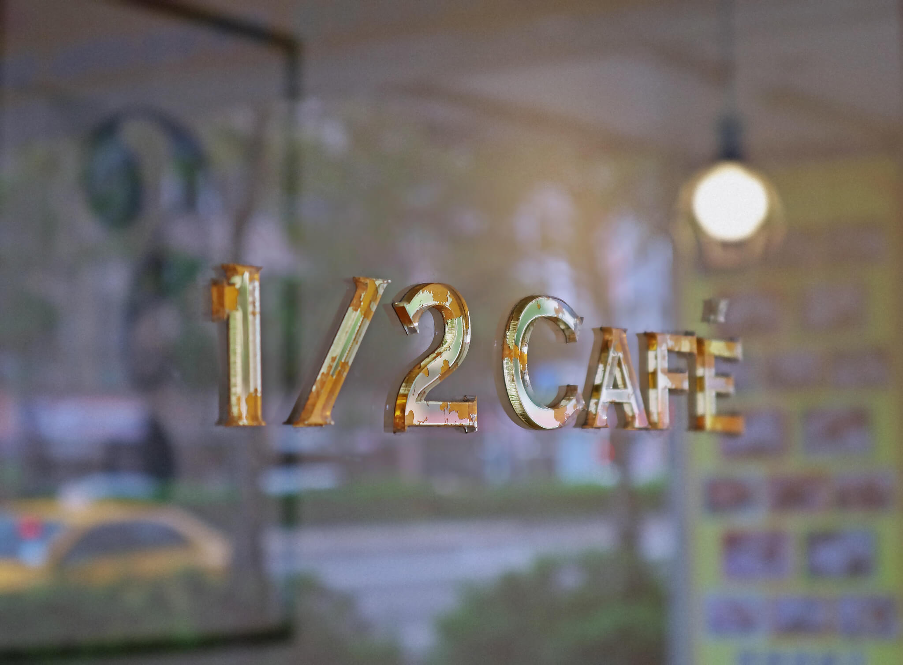
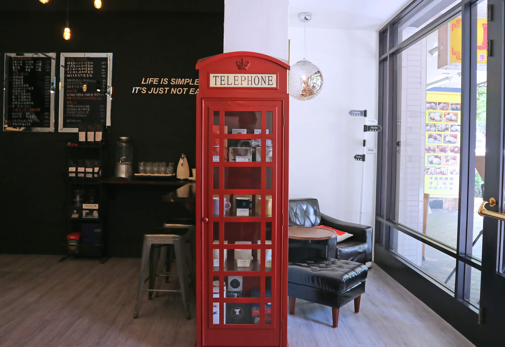
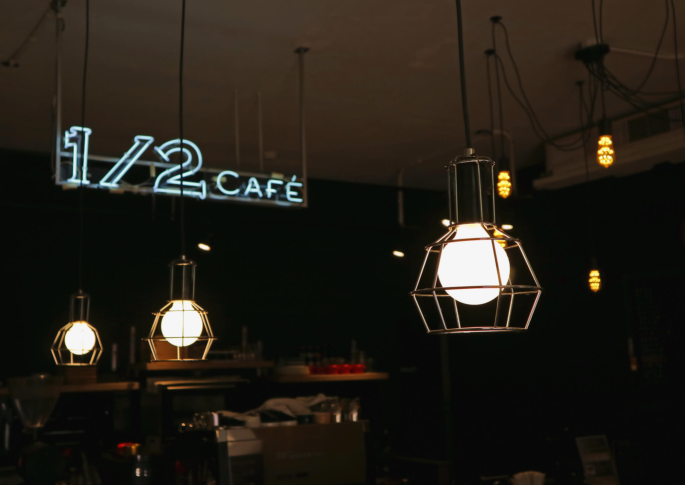
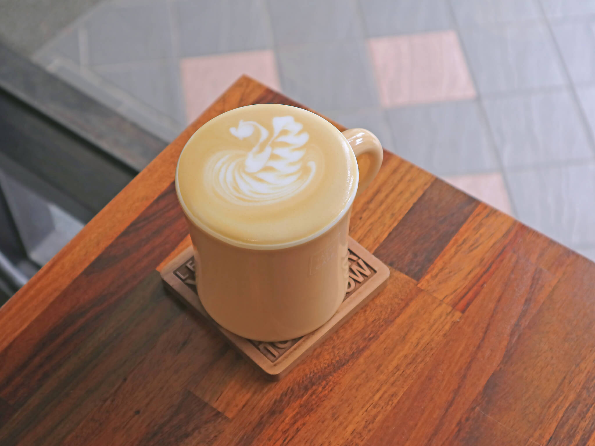

再忙也要空出喝一杯咖啡的時間。
生命中我們永遠在追尋著另一個一半，不論是事業、家庭、婚姻、友情。但不管多忙，別忘了要停下腳步，給自己一杯咖啡的時間，好好休息一下。
節錄自：1/2 CAFÉ 粉絲頁
南京東路上的小小咖啡館
1/2 CAFÉ 是間小小的咖啡館，如果你不是前來尋訪咖啡，腳步稍微走得快些，也許很容易就被你忽略了。1/2 CAFÉ 是純黑色的門面，和南京東路隔著一條騎樓的距離，面對川流不息的喧囂，它顯出一股沉靜而雍容的氣度。

英式咖啡館
麻雀雖小，1/2 CAFÉ 似乎復刻了整套的英倫元素，黑色的大門搭配金色的把手、低調又復古的傢俱風格、煤氣燈造型的吊燈，以及店中央那座難以忽視的紅色電話亭(但裡面擺著各式各樣的咖啡杯)，讓人感到彷彿從台北南京東路上一腳跨進了倫敦小咖啡店。

由於只有四套桌椅，座位不多，也就沒有太多客人的閒聊聲，這樣看似先天不足的缺憾，反而成了隔絕外界一切嘈雜的自然屏障。

即使再忙，也要給自己留一杯咖啡

在1/2 CAFÉ 坐著一會兒，望著南京東路上的車水馬龍，漸漸就能體會出這間小咖啡店存在的意義。在熙來攘往的都會叢林中行走，很容易就會被工作、家庭、緊湊的生活節奏給帶得暈頭轉向。給自己留一杯咖啡，隨著咖啡因對味蕾的刺激，大腦就會在繁忙中逐漸冷靜下來，暫時把思緒倒空，把自己帶離各種汲汲營營。這不僅僅是一種休息，也是一次迅速的重新整理。
店家資訊
1/2 CAFÉ
- 地址：台北市松山區南京東路5段35號
- 電話：02-37655883
營業時間：
週一 ~ 週五：8:00~21:00
週六：9:00~21:00
週日：9:00~18:00
- 推薦：
- 拿鐵
- 熱壓吐司